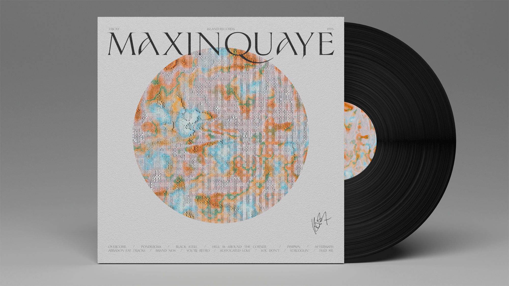

Title
Year
Role

Maxinquaye
2022
Art direction, re-design, photography
Individual


To produce Maxinquaye, Tricky used dub music techniques and heavily altered samples taken from a variety of sources. The resulting groovy, low-tempo sound incorporates elements of hip hop, soul, rock, ambient techno, reggae and experimental music. Tricky's lyrics explore themes of cultural decline, dysfunctional sexual relationships, fear of intimacy, and recreational drug use, drawing on his experiences in British drug culture and the influence of his late mother Maxine Quaye, after whom the album is named. The reworking of the album cover is inspired by these themes, and the texture created is reminiscent of an oxidized and degraded surface.
